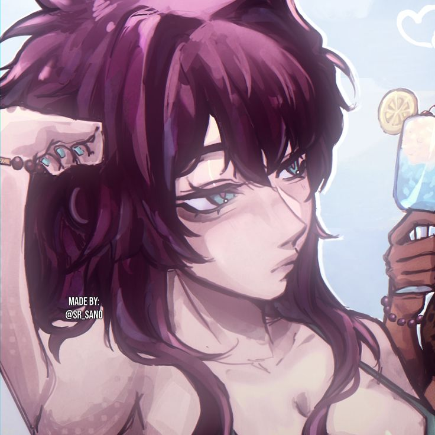
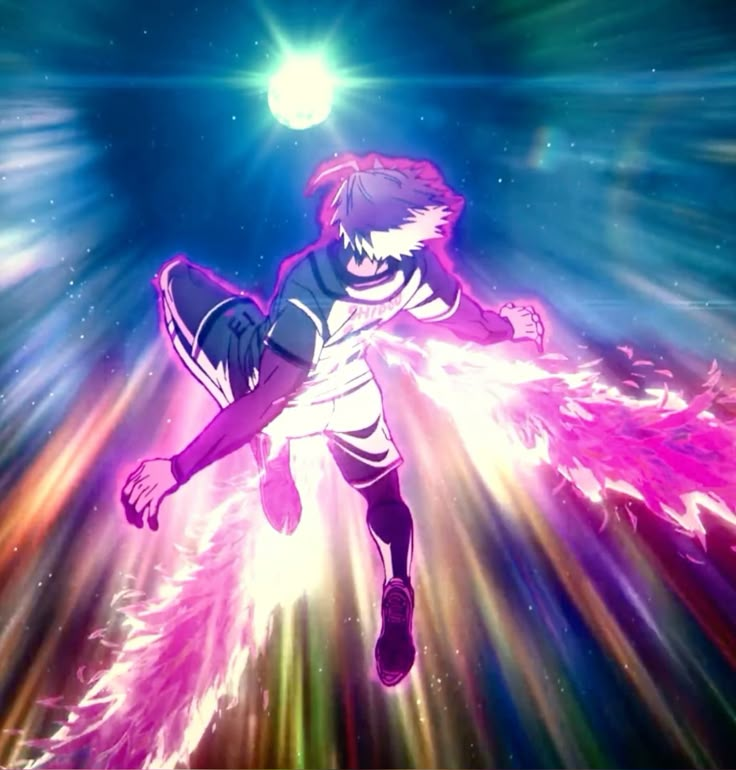
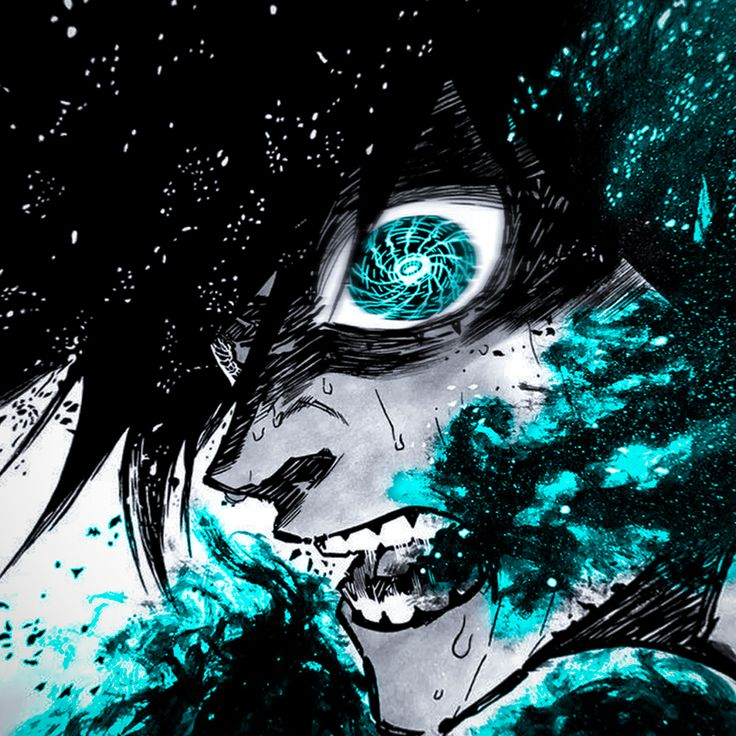

𝄖 ｡ #𝘽𝙇𝙐𝙀 𝙇𝙊𝘾𝙆 𝙋𝙍𝙊𝙅𝙀𝘾𝙏
ᯓ⚽︎ 𝙎𝙏𝘼𝙏𝙎 ㈱꯭

⟢ 𝙉𝙤𝙢𝙗𝙧𝙚: Saory Itoshi
⟢ 𝙀𝙙𝙖𝙙: 19 años
────────────────────────
⟬ 𝟑𝟐𝟓 𝐩𝐮𝐧𝐭𝐨𝐬 𝐚 𝐫𝐞𝐩𝐚𝐫𝐭𝐢𝐫 — 𝐦𝐚́𝐱. 𝟏𝟓𝟎 𝐩𝐨𝐫 𝐬𝐭𝐚𝐭 ⟭
⟬ 𝐏𝐮𝐧𝐭𝐨𝐬 𝐞𝐱𝐭𝐫𝐚: 𝟎𝟎 ⟭
──────────────────────
• 𝙋𝙖𝙨𝙚:【 55+5+8+5 = 73】
• 𝙏𝙞𝙧𝙤: 【 60+5+8+20+15 = 108】
• 𝙁𝙞́𝙨𝙞𝙘𝙤:【 55+5+8+11 = 79】
• 𝙍𝙚𝙜𝙖𝙩𝙚:【 55+5+8+12 = 80】
• 𝘿𝙚𝙛𝙚𝙣𝙨𝙖:【 50+5+8+7 = 70】
• 𝙑𝙚𝙡𝙤𝙘𝙞𝙙𝙖𝙙:【 50+5+8+18 = 81】

Shidou Ryusei sub20
Técnica superior de Ryusei Shidou Legendario Estilo de Tiro Para ti el fútbol no es un deporte, sino una forma de dejar tu existencia grabada marcando gol tras gol. Eres un cazador experto dentro del área. Cuando entras al área chica obtienes +8 en todas las estadísticas. Tus tiros son letales e impredecibles, reduciendo -8 puntos las chances del portero de atajar. Tu Tiro aumenta +20, y si recibes un pase exitoso antes del remate y la volea es inmediata, sumas +6 más y reduces 25% la defensa de interceptores. Tu rango de tiro es eficaz hasta 23 metros. Puedes rematar de cabeza hasta 16 metros sin reducción. Cada vez que derrotas a un oponente en duelo físico obtienes +4 acumulables hasta 16. Tu velocidad aumenta +18 para cazar goles. Si juegas con un usuario de la pasiva Técnica futbolística superior del prodigio analítico Sae Itoshi tus tiros se potencian un 8%. Giro endemoniado Los simplones necesitan mirar la portería. Vos no. Siempre sabés dónde está. Esta habilidad se redacta fuera de tu turno por un aliado. Te permite superar una marca con un giro inesperado que deriva en un tiro impredecible. Las pasivas con meta visión imperfecta no pueden leerlo. Si quieren intervenir deben someterse a velocidad vs tiro con -15%. Si hay marcaje intenso se genera ruleta de físico. Ejecución: Un aliado debe redactar tu situación y la marca rival. Debe mencionarse Giro endemoniado. Cooldown 5 turnos. Dragon Drive Tirar desde cualquier posición es tu especialidad. Esta volea aérea envía el balón con trayectoria descendente. Quien intente intervenir debe someterse a velocidad vs tiro y si intenta bloquear trayecto es tiro vs defensa con -15% ambas estadísticas. Ejecución: Debe estar en el aire y referenciar Dragon Drive. Cooldown 6 turnos. Movimiento especial en estado de flujo BIG BANG DRIVE Un gol nunca está perdido. Ejecución de un tiro desde media distancia sin reducción por distancia. Después de mitad de cancha solo reduce 37% en lugar de 50%. Dentro de 26 metros reduce 35% la defensa de interceptores y -5 puntos en ruleta de gol. Ejecución: El balón debe estar en el aire. Debe mencionarse Big Bang Drive. Cooldown 8 turnos.

Rin Itoshi sub20
Estilo del Marionetista Itoshi Rin Legendario Pasiva de Estilo No naciste siendo un prodigio, pero te forjaste como uno. No fue la gloria lo que te empujó hacia adelante, sino la herida abierta de una traición. Una promesa rota, un hermano ausente, un vacío que llenaste con odio. No juegas por amor al balón, sino por la necesidad de demostrar que nadie puede escapar de tu sombra. Tu existencia entera es una declaración de guerra silenciosa. No buscas competir, buscas dominar. Tu estilo no persigue la armonía ni la inspiración. Es una red de trampas tejida con cálculo quirúrgico. Te mueves como si vieras el futuro, y quienes te rodean, aliados o enemigos, actúan sin saber que ya los habías condicionado. Tu control del campo es psicológico, invisible y constante. Incluso cuando no tocas el balón, estás dirigiendo la jugada, lo que te permite obligar a tus compañeros a utilizar sus habilidades y armas cuando lo requieres. Tu disparo es tu firma. No solo por la potencia o la precisión, sino por su diseño impredecible. Los tiros con curva que ejecutas parecen desobedecer la física, ya sea con interior o exterior, apareciendo tarde, torcidos, letales. La ambidiestria se convierte en otra capa de tu engaño. Y cuando golpeas con el exterior del pie, es como si deformaras el espacio entre el balón y la red. Por eso recibes un +15 en Tiro, reflejando tu capacidad para cerrar jugadas con frialdad quirúrgica desde cualquier ángulo, con cualquier pierna. Tu forma de leer el juego es tu mayor don oculto. Como una computadora humana, reconoces patrones, absorbes datos y anticipas errores. Tus ojos no siguen el balón: lo preceden. Gracias a tu Conciencia Espacial Avanzada, obtienes +5 puntos a todas tus estadísticas, porque incluso tus movimientos sin balón están cargados de intención, cálculo y presión. El cuerpo que acompaña tu mente ha sido afinado para resistir, no para brillar. Has aprendido a soportar empujones, a ganar duelos, a absorber contacto sin perder el equilibrio. Esa dureza mental se refleja en lo físico y te otorga un +11 en Físico. No eres el más fuerte, pero es difícil derribarte. Incluso más difícil superarte. En cuanto a Regate, tu estilo no necesita florituras. No bailas, amputas. Tus amagues son secos, breves, casi imperceptibles y por eso imposibles de leer. El rival no puede reaccionar a lo que apenas ve. Por eso sumas +12 en Regate, convirtiéndote en una amenaza directa. Tu +7 en Defensa no te convierte en un ancla, pero sí en un cortocircuito. Sabes cerrar líneas, interceptar sin ensuciar y leer cuándo detener una jugada antes de que nazca. No te defines como defensor, pero si el enemigo entra en tu zona, sufre el mismo control que ejerces en ataque. Tu Velocidad (+8) no rompe cronómetros, pero tu capacidad de anticiparte te permite llegar antes. Corres lo justo y en el momento exacto. Tu Pase, aunque modesto, es letal en precisión. No construyes jugadas largas, ejecutas una sola línea perfecta en el momento final. El pase no busca mantener posesión, sino asegurar tu disparo. Eso te aumenta +5 en Pase. Control del Marionetista Tu estilo no persigue la armonía ni la inspiración. Es una red de trampas tejida con cálculo quirúrgico. Te mueves como si vieras el futuro, y quienes te rodean actúan condicionados sin saberlo. Tu control es psicológico, invisible y constante. Incluso sin tocar el balón, diriges la jugada y puedes obligar a tus aliados a usar sus habilidades cuando lo necesitas. Durante un tiempo limitado activas un estilo lleno de hilos invisibles, una manifestación absoluta de tu control mental. No es magia ni carisma. Es miedo, precisión y presencia. Cuando esta habilidad entra en efecto, todo se vuelve más lento para los demás. Tus aliados siguen tus ideas sin darse cuenta. Tus enemigos se alinean contigo sin poder evitarlo. El campo se convierte en una jaula que solo vos ves. Si un aliado está dentro de tu rango de presión, aproximadamente 25 metros, sus decisiones ofensivas importantes se ven forzadas a ejecutarse cuando vos lo condicionas. Ya no deciden ellos. Decidís vos. La jugada nace de tu respiración, y si falla, es porque lo permitiste. Ejecución: Debes hacer referencia a Control del Marionetista y a la habilidad de tu aliado. Cooldown: 8 turnos globales. Tiro con Curvatura de Exterior No es un disparo común. Es una anomalía diseñada. Golpeas el balón con el exterior del pie, no por capricho, sino por instinto refinado. El contacto no sigue la lógica tradicional. La curva es tardía y engañosa. Los sensores de meta visión fallan porque no se puede predecir algo que decidís en el último cuarto de segundo. El cuerpo no revela nada. El pie no anticipa el resultado. Lo que lanzás es una contradicción física con intención letal. Cuando ejecutas este tiro obtienes +25% en Tiro inmediato. La precisión no disminuye incluso desde ángulos abiertos. El balón parece doblarse por voluntad propia. Si un rival intenta interceptarlo su Defensa se reduce en 25%. Esta habilidad no puede ser leída por Meta Visión avanzada a menos que ya haya sido vista antes por ese jugador. Ejecución: Debes hacer referencia a Tiro con Curvatura de Exterior y haber generado la ocasión de gol. Cooldown de 6 turnos propios. Regate con Finta × Conciencia Espacial Tu cuerpo no se mueve más rápido que el ojo, pero sí más rápido que la mente. Ejecutas una finta sutil, medida, casi imperceptible. Una pausa que no es pausa. Un paso cancelado al hacerlo. El rival reacciona cuando ya es tarde. Cuando activas, fuerzas un enfrentamiento directo entre tu Regate y la Defensa rival. Tu Regate aumenta +25% y su Defensa se reduce -25%. Si ganas atravesás su línea como si no estuviera. Si pierdes, el rival queda desestabilizado un turno, reduciendo su siguiente acción defensiva en -10%. Ejecución: Debes hacer referencia a Regate con Finta × Conciencia Espacial y a la secuencia activa. Cooldown de 5 turnos propios. Movimiento especial en estado de flujo Destrucción frontal Un sentimiento familiar pero desconocido te inunda. Pierdes la lógica y destruyes con brutalidad. Al usar esta habilidad confrontas al rival usando su mejor estadística contra él, reduciendo 28% su estadística total excepto jugadores New Gen Eleven. Si ganas, sumas +12 en Físico y Regate de forma permanente en el partido. Ejecución: Debes nombrar el tipo de enfrentamiento y cómo lo superas, luego hacer referencia a la habilidad. Destrucción del centro de gravedad Eres destrucción pura. Obligas un enfrentamiento físico mientras tienes el balón sin necesidad de ruleta. Si lo ganas, el rival sufre -6 en Físico todo el partido excepto New Gen Eleven. Cooldown: 3 turnos. Ejecución: Debes describir el choque físico y el uso de la habilidad. Cooldown de 5 turnos. Como detalle extra, al entrar en flujo pierdes acceso a Control del Marionetista hasta recuperarte.